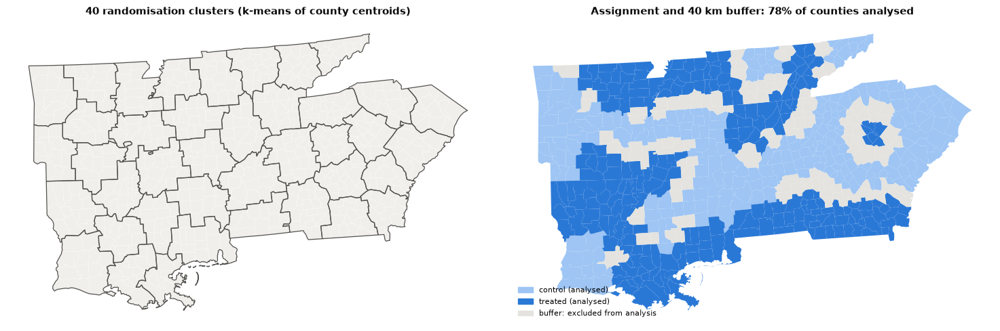
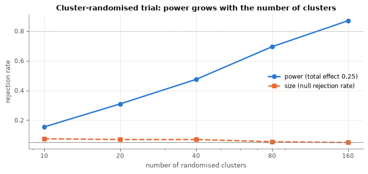

This notebook plans a hypothetical community-health-worker trial and checks exposure, balance, and power before any outcome is collected. The counties are those in Mississippi, Alabama, Georgia, Louisiana, Arkansas, Tennessee, and South Carolina.
The designs are cluster randomisation with buffer zones, two-stage saturation, GRTS, and rerandomisation. The classes are ClusterRandomizedDesign and SaturationDesign in geolattice.spatial_analysis.spatialcausal.
The previous notebooks fought confounding and interference after the fact. A randomised experiment removes confounding by design, but with spillovers the design must also control exposure. Here we plan a hypothetical trial of the CHW program across counties of seven Deep-South states, using real county locations and real diabetes residuals to calibrate the outcome variability.
Installation. This notebook needs installation option 3 (core, spatial analysis and spatial statistics): pip install "geolattice[statistics]". See “Installation options” in the GeoLattice README.
Code
import warningswarnings.filterwarnings("ignore")import numpy as np, pandas as pd, matplotlib.pyplot as pltimport geolattice.spatial_analysis.spatialcausal as sc, countycausal as cc, tutorial_style as tsfrom geolattice.spatial_statistics.weights import Queents.use()states = ["MS", "AL", "GA", "LA", "AR", "TN", "SC"]g = cc.build_county_frame()reg = g[g.state_abbr.isin(states)].reset_index(drop=True)xy = cc.coords_km(reg)Xr = reg[cc.COVARIATES].to_numpy()wr = Queen(reg)exposure = sc.ExposureMapping(wr, kind="share", threshold=0.5)print(f"{len(reg)} counties in {len(states)} states")
588 counties in 7 states
Calibrating outcome variability from real data
Power depends on how variable the outcome is after adjusting for what we know, and on how far that variability is spatially correlated. We regress real diabetes prevalence on the covariates and look at the residuals.
residual SD = 0.54 points; Moran's I of residuals = 0.31
simulation noise: iid SD 0.38 + spatial SD 0.38 (length scale 150 km)
Cluster randomisation and buffer zones
Randomising clusters of neighbouring counties (here k-means clusters of centroids) means most counties share their neighbours’ assignment, so spillovers stay within arms. Counties on a cluster edge still border the other arm. A buffer of distance \(b\) excludes from analysis every county whose \(b\)-neighbourhood contains the other arm. If spillovers reach no further than \(b\), each analysed county’s exposure equals its own cluster’s assignment, and the comparison estimates the total effect (own + neighbourhood) cleanly (cf. graph cluster randomisation, Ugander et al., 2013).
Variance. With \(G\) clusters of size \(m\) and intra-cluster correlation \(\rho\), the variance of a difference in means is inflated by the design effect\(1+(m-1)\rho\) relative to unit randomisation. Inference must use the cluster as the unit: cluster-robust standard errors with a \(t_{G-1}\) reference distribution.
Code
crd = sc.ClusterRandomizedDesign(xy, n_clusters=40, buffer=40.0, random_state=1)t_c = crd.sample(rng=3)mask = crd.analysis_mask(t_c)reg["arm"] = np.where(~mask, 2, t_c)fig, ax = plt.subplots(1, 2, figsize=(15, 4.8))reg["cluster"] = crd.clustersreg.plot(ax=ax[0], color="#f0efec", edgecolor="white", linewidth=0.2)reg.dissolve("cluster").boundary.plot(ax=ax[0], color=ts.INK2, linewidth=0.9)ax[0].set_axis_off(); ax[0].set_title("40 randomisation clusters (k-means of county centroids)")ts.county_map(reg, "arm", ax[1], categorical=True, colors=["#9ec5f4", ts.BLUE, "#e4e3df"], legend_labels=["control (analysed)", "treated (analysed)", "buffer: excluded from analysis"], title=f"Assignment and 40 km buffer: {mask.mean():.0%} of counties analysed")plt.tight_layout()print(f"average share analysed over 30 draws: {crd.interior_share(30, rng=0):.2f}")
average share analysed over 30 draws: 0.79

Two-stage randomised saturation
To measure spillovers, vary how intensively each cluster is treated (Baird et al., 2018). Stage one randomises clusters to saturation levels \(\pi\in\{0,\ 0.33,\ 0.67\}\); stage two treats each county in a cluster with probability \(\pi\). Untreated counties in partially treated clusters versus counties in pure-control clusters identify the spillover on the untreated, and comparing saturations traces how spillovers grow with treatment intensity.
GRTS (generalised random tessellation stratified sampling; Stevens & Olsen, 2004) orders units along a randomised hierarchical (quadtree) address and takes a systematic sample through cumulative inclusion probabilities. Every county keeps its intended probability \(\pi_i=n_T/n\), so design-based inference stays valid, but treated counties are spread evenly over space. We use geolattice.spatial_statistics.sampling.grts.
Rerandomisation (Morgan & Rubin, 2012) draws assignments until balance criteria hold, here every covariate’s standardised mean difference
and Moran’s I of the assignment at most 0. The analysis must then use randomisation inference over the accepted assignments.
The diagnostics compare four designs on the same 30% treated share.
Code
n_t =int(0.3*len(reg))rng = np.random.default_rng(11)t_srs = np.zeros(len(reg), int); t_srs[rng.choice(len(reg), n_t, replace=False)] =1t_grts = sc.balanced_allocation(xy, n_t, seed=11)t_rr, info = sc.rerandomize(xy, Xr, n_t, max_smd=0.08, max_moran=0.0, w=wr, n_draws=3000, seed=11)t_cl = sc.ClusterRandomizedDesign(xy, n_clusters=40, p=0.3, random_state=1).sample(rng=4)rows = {}for name, t in [("simple random", t_srs), ("GRTS (spatially balanced)", t_grts), ("rerandomised", t_rr), ("cluster (40 clusters)", t_cl)]: d = sc.design_diagnostics(t, xy, Xr, wr, exposure=exposure, names=cc.COVARIATES) rows[name] = {"treated share": d["treated_share"], "max |SMD|": d["balance"].max(),"Moran's I of T": d["moran"]["I"], **{f"n {k}": v for k, v in d["exposure_counts"].items()}}print(f"rerandomisation acceptance rate: {info['acceptance_rate']:.2%} "f"({len(info['accepted'])} accepted assignments form the randomisation-inference reference set)")pd.DataFrame(rows).T.round(3)
rerandomisation acceptance rate: 1.43% (43 accepted assignments form the randomisation-inference reference set)
treated share
max |SMD|
Moran's I of T
n c00
n c01
n c10
n c11
simple random
0.299
0.238
0.022
317.0
95.0
134.0
42.0
GRTS (spatially balanced)
0.299
0.126
-0.118
307.0
105.0
166.0
10.0
rerandomised
0.299
0.071
-0.038
311.0
101.0
151.0
25.0
cluster (40 clusters)
0.296
0.258
0.734
395.0
19.0
14.0
160.0
GRTS and rerandomisation spread treatment out (negative Moran’s I), which minimises exposure contamination and gives few treated-high-exposure counties. Cluster assignment does the opposite: treatment is strongly clustered, nearly all treated counties are highly exposed, and nearly all controls are not. Which is better depends on the estimand: dispersed designs suit direct effects, clustered designs suit total (policy-scale) effects.
Power by simulation
Analytic power formulas break down with spillovers and spatially correlated outcomes, so we simulate. Each replicate draws an assignment from the design and outcomes
with \(H_i\) the high-exposure indicator, then estimates the effect with cluster-robust SEs and tests at 5% using \(t_{G-1}\). Power is the rejection rate under the alternative. Size (the rejection rate with all effects set to 0) checks that the test itself is valid.
fig, ax = plt.subplots(figsize=(7.5, 3.6))ax.plot(pc.index, pc.power, "o-", color=ts.BLUE, label="power (total effect 0.25)")ax.plot(pc.index, pc["size"], "s--", color=ts.ORANGE, label="size (null rejection rate)")ax.axhline(0.05, color=ts.MUTED, lw=0.8); ax.axhline(0.8, color=ts.MUTED, lw=0.8, ls=":")ax.set_xscale("log"); ax.set_xticks(pc.index); ax.set_xticklabels(pc.index)ax.set_xlabel("number of randomised clusters"); ax.set_ylabel("rejection rate"); ax.legend()ax.set_title("Cluster-randomised trial: power grows with the number of clusters")plt.tight_layout()

With few large clusters the trial is underpowered. Each cluster contributes roughly one independent draw of the regional noise, so power rises with the number of clusters \(G\), not with the number of counties, which stays fixed at 588. The mean estimate also drifts down with many small clusters: no buffer is used here, so more counties sit on cluster edges where neighbourhood exposure does not match own assignment, diluting the total-effect contrast (true value 0.25 only for fully “interior” counties). The size_warning column flags designs whose null rejection rate is clearly above 5%; none is flagged here.
Spillover power: saturation versus unit randomisation.
For spillovers, independent county-level assignment has the most power because every county is a cluster of one. Saturation designs give up power in exchange for controlled variation in exposure intensity and a pure-control arm. But look at the size column: every design over-rejects (about 10-13% instead of 5%) and carries a size warning. The noise is correlated over ~150 km, so nearby counties (or nearby clusters) are not independent, and the spillover contrast compares groups that are spatially interleaved, which these standard errors ignore. The reported power is therefore optimistic. Larger clusters, buffers, or spatially robust (Conley) variance would be needed before trusting these designs for a spillover hypothesis.
Summary and Conclusions
Match the design to the estimand. Dispersed (GRTS, rerandomised) assignments suit direct effects; clustered assignments suit total effects; saturation designs identify spillovers by intensity.
Buffers make exposure match assignment but discard counties; check what share remains.
Power with spatial outcomes is driven by the number of clusters, not the number of counties.
Always simulate the size of the test as well as its power. A design whose test over-rejects overstates its power.
Resources
Papers
Reference
Notes
Ugander et al. (2013)
Graph cluster randomisation
Baird et al. (2018)
Two-stage randomised saturation designs
Stevens & Olsen (2004)
GRTS: spatially balanced samples with fixed inclusion probabilities
Morgan & Rubin (2012)
Rerandomisation until balance criteria hold
In this library
Object
Role
ClusterRandomizedDesign
Cluster assignment and a distance buffer
SaturationDesign
Cluster saturation, then Bernoulli assignment inside clusters
geolattice.spatial_statistics.sampling.grts
Generalised random tessellation stratified sample
ExposureMapping
High-exposure indicator used in the power simulation